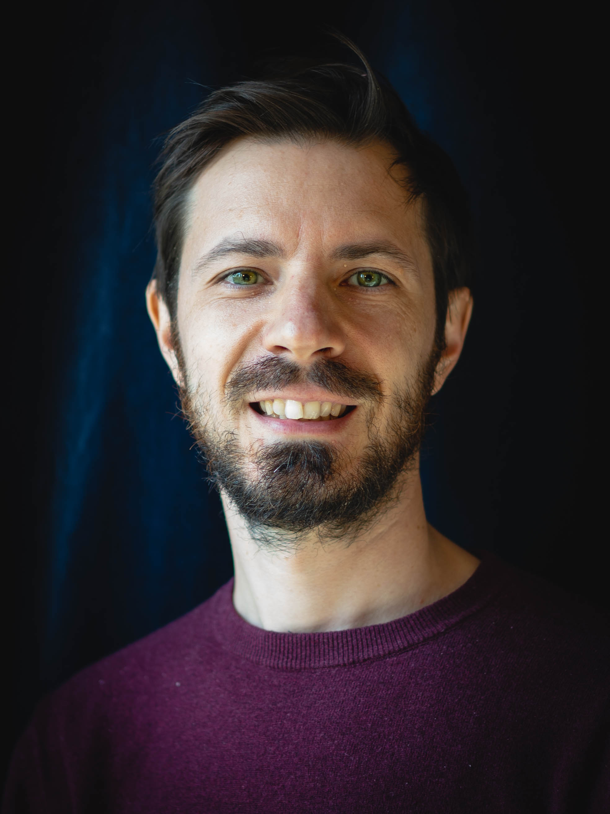
Benoît Pouzol
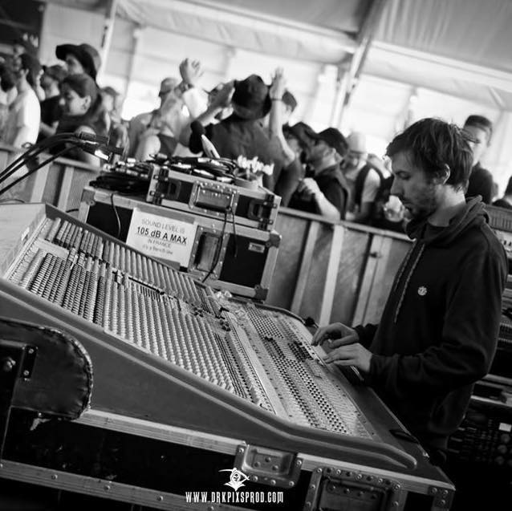
Live / FOH
Mixage façade, régie son, préparation technique et exploitation live. Expérience scène, tournée et systèmes de diffusion.
Voix off / Podcast
Enregistrement, édition et traitement de voix : intelligibilité, présence et stabilité sonore.
Mixage documentaire
Mix à l’image : dialogues, ambiances, musique, nettoyage audio et livrables diffusion.
Formation audio
Formation live, studio, routing, consoles numériques, workflow DAW et méthodes professionnelles.
Production / Studio
Production, enregistrement et mixage musical avec une forte expérience dans les musiques rock, metal et hardcore. Compositeur et producteur du projet GoulouD.
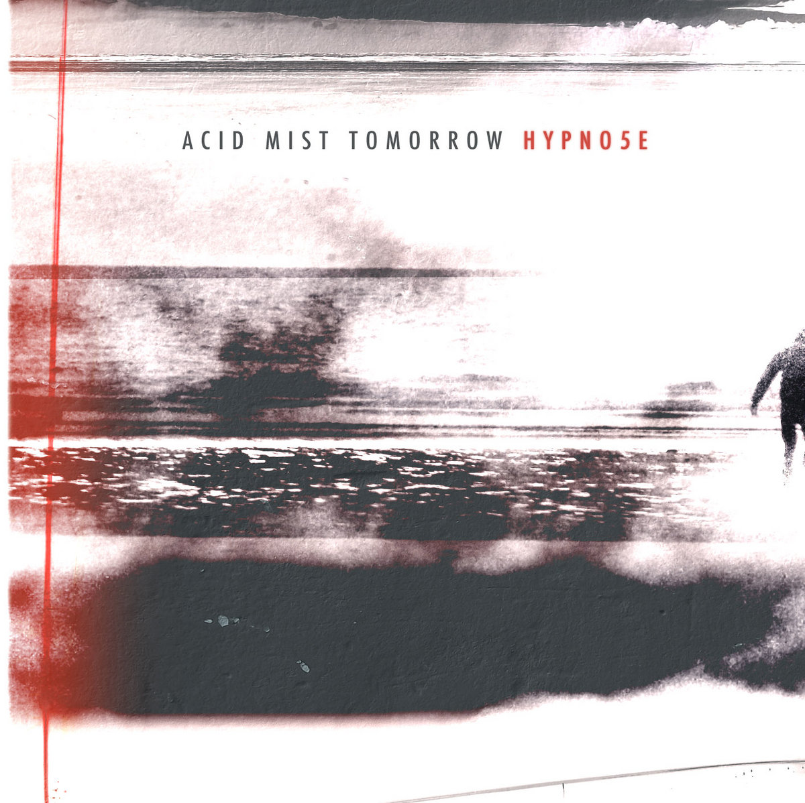


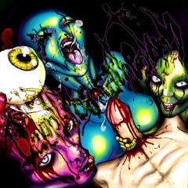
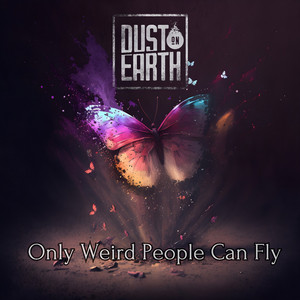
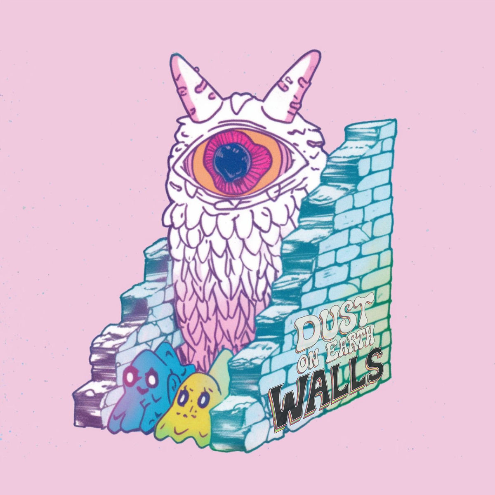
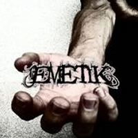
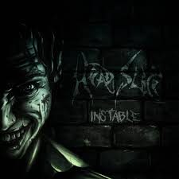
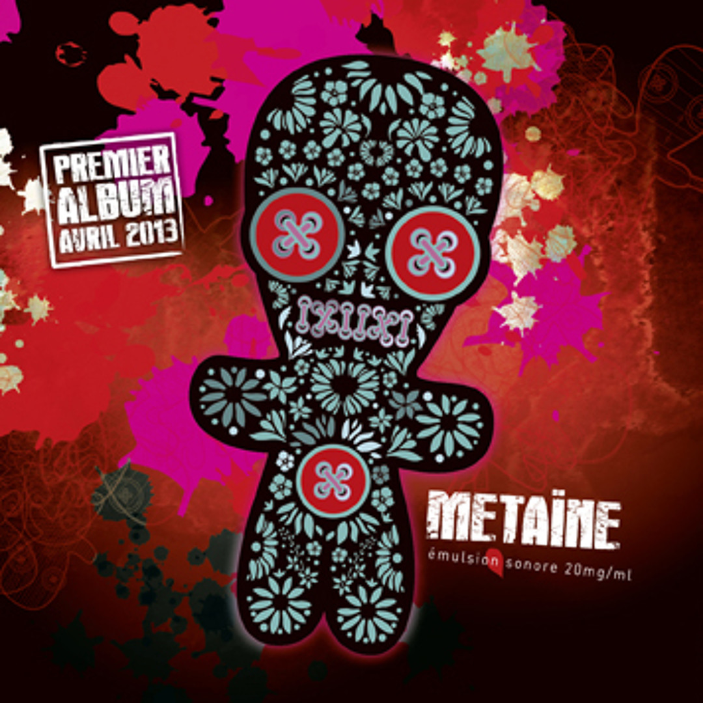
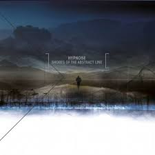


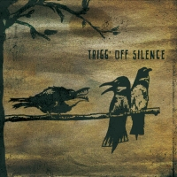
À propos
Basé près d’Avignon, je travaille depuis plusieurs années entre le live, le studio et la post-production. Mon parcours croise la régie son, le mixage façade, la production musicale, la voix off et le mixage documentaire.